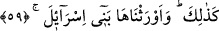
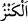
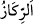
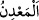
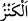
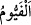

ödenmeyen mal, yerin üstünde görünür vaziyette de olsa o “kenz/hazîne”dir. Allah’ın
hakkı ödenen mal ise yedi kat yerin altında bile olsa “kenz/hazîne” değildir.
“ toplanmış ve muhafaza altına alınmış maldır. Onunla “ ve “
arasındaki fark şudur: “ ister yaratılmış olsun, ister sonradan konsun yerin altında
yerleştirilmiş maldır. “ yerin altında yaratılmış, “ ise yerin altına sonradan
konulmuş maldır.
Harîdetü’l-acâib’de der ki: “Mısır arâzîsinde çok hazineler vardır. Mısır’ın çoğu
yerinde gömülü altın hazineleri olduğu söylenir. Hatta orada defîne olmayan bir yerin
bulunmadığı bile söylenmiştir.”
“Ve değerli yerlerden.” Yani güzel evlerden ve değerli oturma yerlerinden onları
çıkardık.
Süheylî, Kitâbü’t-Ta’rîf ve’l-i’lâm’da der ki: Müfessirlerden bir grubun görüşüne
göre burası Mısır arâzîsinin el-Feyyûm bölgesidir. “ün mânâsı, et-Tekmile’de
belirtildiği üzere bin gün demektir. Burası Yusûf Sıddîk (a.s.)’ın kurduğu büyük bir
şehirdir. Şehri ikiye ayıran bir nehir vardır. Nehir dünyanın hârikalarındandır. Çünkü
Nil’le birleşir, kış aylarında ise ondan ayrılır. Diğer zamanlarda normal şekilde akar.
Bu şehre bağlı üç yüz altmış mamur köy vardır. Hepsinin tarlaları ve mahsulleri vardır.
Denilir ki Yusuf (a.s.) zamanında su o bölgenin çoğunu kaplamıştı. Yusuf (a.s.) o
bölgeyi senenin günleri sayısına göre ayırdı. Mısır’da kıtlık olduğu zaman o bölgenin
köylerinden her biri Mısır halkının bir gün ihtiyacını karşılardı.
Feyyûm arâzîsinde bahçeler, ağaçlar, bol ucuz meyveler, yüksek vasıflı balıklar ve
çok miktarda şeker kamışı vardır.
59. Böylece, bunlara İsrailoğulları’nı mirasçı yaptık.
“Böylece” yani bu hayret verici çıkarma ile onları çıkardık. Ebü’l-Leys der ki:
“Böylece” yani bana ısyân edene işte böyle yaparım.”
“Bunlara İsrailoğulları’nı mirasçı yaptık.” Yâni miras bırakanın malı vârisin
olduğu gibi bu bahçeleri, pınarları, hazîneleri ve güzel yerleri İsrâiloğulları’nın
tasarrufuna verdik. Sanki onlar sâhiplerinin oralardan çıktıkları andan îtibaren daha
kabz ve teslim almadan önce oralara mâlik olmuşlardır.
Onların (Fir’avn kavmi) bağ, bahçe, hazine ve mallarını Yakuboğulları’na miras
verdik. Bir görüşe göre miras sözünden kasdedilen, İsrailoğulları’nın Fir’avn ve
kavminin helâkinden sonra Mısır’a gelip Kıbtîlerin bütün mallarına tasarruf etmeleridir.
Sahih olan kavil şudur: Davud (a.s.)’ın devleti zamanında hükümranlığı elde edip
Mısırlıların ülkesine hükmettiler. Nitekim Taberî “Onlar Fir’avn âilesinin yurtlarına